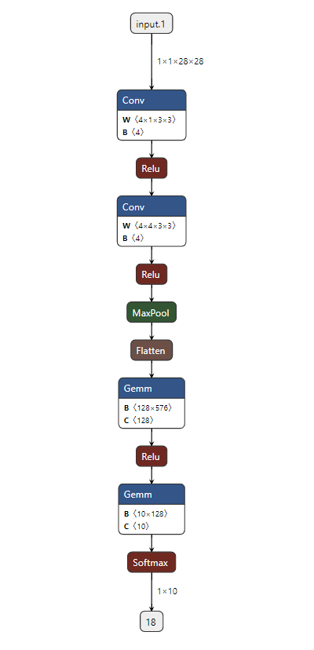

Load from ONNX¶
In this example, we will see step by step how to load a model from ONNX.
You can find the full python script here lenet_onnx.py with the associated onnx file here LeNet.onnx.

Loading an ONNX¶
Before loading the ONNX file, we need to create an n2d2.database.MNIST and n2d2.provider.DataProvider objects.
# Change default model to run with CUDA
n2d2.global_variables.default_model = "Frame_CUDA"
# Change cuda device (default 0)
n2d2.global_variables.cuda_device = args.device
nb_epochs = args.epochs
batch_size = 54
print("\n### Create database ###")
database = n2d2.database.MNIST(data_path=args.data_path, validation=0.1)
print("\n### Create Provider ###")
provider = n2d2.provider.DataProvider(database, [28, 28, 1], batch_size=batch_size)
provider.add_transformation(n2d2.transform.Rescale(width=28, height=28))
print(provider)
Once this is done, you can load your ONNX file with one line :
print("\n### Loading Model ###")
model = n2d2.cells.DeepNetCell.load_from_ONNX(provider, args.onnx)
print(model)
You should observe a verbose output of the loaded ONNX model :
'DeepNetCell_0' DeepNetCell(
(0): '9' Conv(Frame_CUDA<float>)(nb_inputs=1, nb_outputs=4, kernel_dims=[3, 3], sub_sample_dims=[1, 1], stride_dims=[1, 1], padding_dims=[0, 0], dilation_dims=[1, 1] | back_propagate=True, no_bias=False, outputs_remap=, weights_export_flip=False, weights_export_format=OCHW, activation=Rectifier(clipping=0.0, leak_slope=0.0, quantizer=None), weights_solver=SGD(clamping=, decay=0.0, iteration_size=1, learning_rate=0.01, learning_rate_decay=0.1, learning_rate_policy=None, learning_rate_step_size=1, max_iterations=0, min_decay=0.0, momentum=0.0, polyak_momentum=True, power=0.0, warm_up_duration=0, warm_up_lr_frac=0.25), bias_solver=SGD(clamping=, decay=0.0, iteration_size=1, learning_rate=0.01, learning_rate_decay=0.1, learning_rate_policy=None, learning_rate_step_size=1, max_iterations=0, min_decay=0.0, momentum=0.0, polyak_momentum=True, power=0.0, warm_up_duration=0, warm_up_lr_frac=0.25), weights_filler=Normal(mean=0.0, std_dev=0.05), bias_filler=Normal(mean=0.0, std_dev=0.05), quantizer=None)
(1): '11' Conv(Frame_CUDA<float>)(nb_inputs=4, nb_outputs=4, kernel_dims=[3, 3], sub_sample_dims=[1, 1], stride_dims=[1, 1], padding_dims=[0, 0], dilation_dims=[1, 1] | back_propagate=True, no_bias=False, outputs_remap=, weights_export_flip=False, weights_export_format=OCHW, activation=Rectifier(clipping=0.0, leak_slope=0.0, quantizer=None), weights_solver=SGD(clamping=, decay=0.0, iteration_size=1, learning_rate=0.01, learning_rate_decay=0.1, learning_rate_policy=None, learning_rate_step_size=1, max_iterations=0, min_decay=0.0, momentum=0.0, polyak_momentum=True, power=0.0, warm_up_duration=0, warm_up_lr_frac=0.25), bias_solver=SGD(clamping=, decay=0.0, iteration_size=1, learning_rate=0.01, learning_rate_decay=0.1, learning_rate_policy=None, learning_rate_step_size=1, max_iterations=0, min_decay=0.0, momentum=0.0, polyak_momentum=True, power=0.0, warm_up_duration=0, warm_up_lr_frac=0.25), weights_filler=Normal(mean=0.0, std_dev=0.05), bias_filler=Normal(mean=0.0, std_dev=0.05), quantizer=None)(['9'])
(2): '13' Pool(Frame_CUDA<float>)(pool_dims=[2, 2], stride_dims=[2, 2], padding_dims=[0, 0], pooling=Pooling.Max | activation=None)(['11'])
(3): '15' Fc(Frame_CUDA<float>)(nb_inputs=576, nb_outputs=128 | back_propagate=True, no_bias=False, normalize=False, outputs_remap=, weights_export_format=OC, activation=Rectifier(clipping=0.0, leak_slope=0.0, quantizer=None), weights_solver=SGD(clamping=, decay=0.0, iteration_size=1, learning_rate=0.01, learning_rate_decay=0.1, learning_rate_policy=None, learning_rate_step_size=1, max_iterations=0, min_decay=0.0, momentum=0.0, polyak_momentum=True, power=0.0, warm_up_duration=0, warm_up_lr_frac=0.25), bias_solver=SGD(clamping=, decay=0.0, iteration_size=1, learning_rate=0.01, learning_rate_decay=0.1, learning_rate_policy=None, learning_rate_step_size=1, max_iterations=0, min_decay=0.0, momentum=0.0, polyak_momentum=True, power=0.0, warm_up_duration=0, warm_up_lr_frac=0.25), weights_filler=Normal(mean=0.0, std_dev=0.05), bias_filler=Normal(mean=0.0, std_dev=0.05), quantizer=None)(['13'])
(4): '17' Fc(Frame_CUDA<float>)(nb_inputs=128, nb_outputs=10 | back_propagate=True, no_bias=False, normalize=False, outputs_remap=, weights_export_format=OC, activation=Linear(clipping=0.0, quantizer=None), weights_solver=SGD(clamping=, decay=0.0, iteration_size=1, learning_rate=0.01, learning_rate_decay=0.1, learning_rate_policy=None, learning_rate_step_size=1, max_iterations=0, min_decay=0.0, momentum=0.0, polyak_momentum=True, power=0.0, warm_up_duration=0, warm_up_lr_frac=0.25), bias_solver=SGD(clamping=, decay=0.0, iteration_size=1, learning_rate=0.01, learning_rate_decay=0.1, learning_rate_policy=None, learning_rate_step_size=1, max_iterations=0, min_decay=0.0, momentum=0.0, polyak_momentum=True, power=0.0, warm_up_duration=0, warm_up_lr_frac=0.25), weights_filler=Normal(mean=0.0, std_dev=0.05), bias_filler=Normal(mean=0.0, std_dev=0.05), quantizer=None)(['15'])
(5): '18' Softmax(Frame_CUDA<float>)(with_loss=True, group_size=0 | activation=None)(['17'])
)
The model has been exported successfully !
Training and exporting the model¶
You can now do what you want with your imported model, like training it :
model.fit(learn_epoch=nb_epochs, valid_metric='Accuracy')
model.run_test()
And even exporting it to CPP in int 8 !
Warning
Don’t forget to remove the softmax layer first because N2D2 does not export this layer for the CPP export.
model.remove("18") # removing Softmax layer before export !
n2d2.export_cpp(model, nb_bits=8, calibration=1)